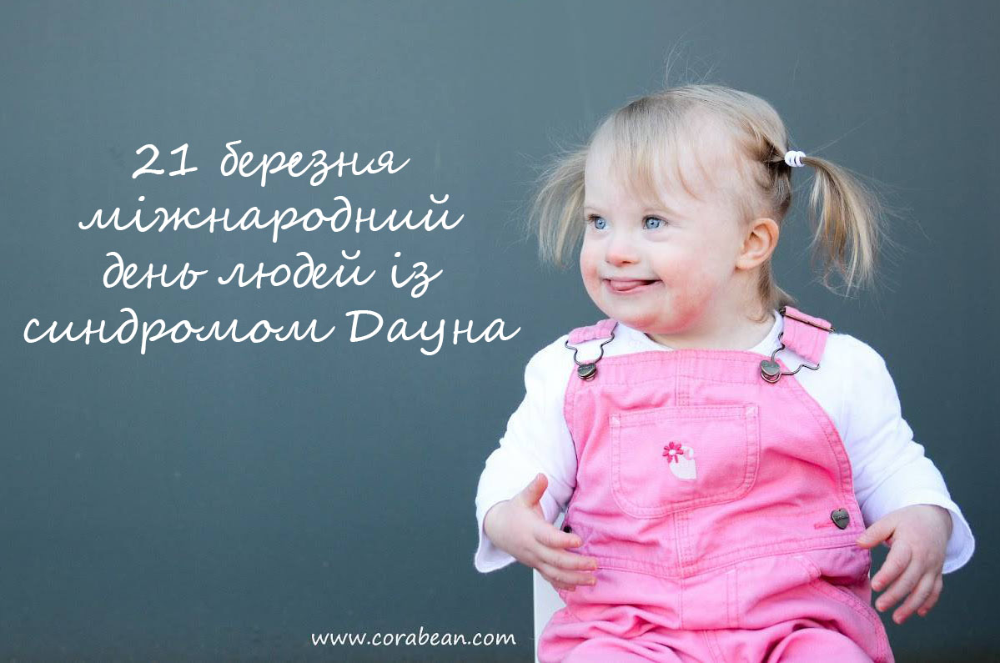
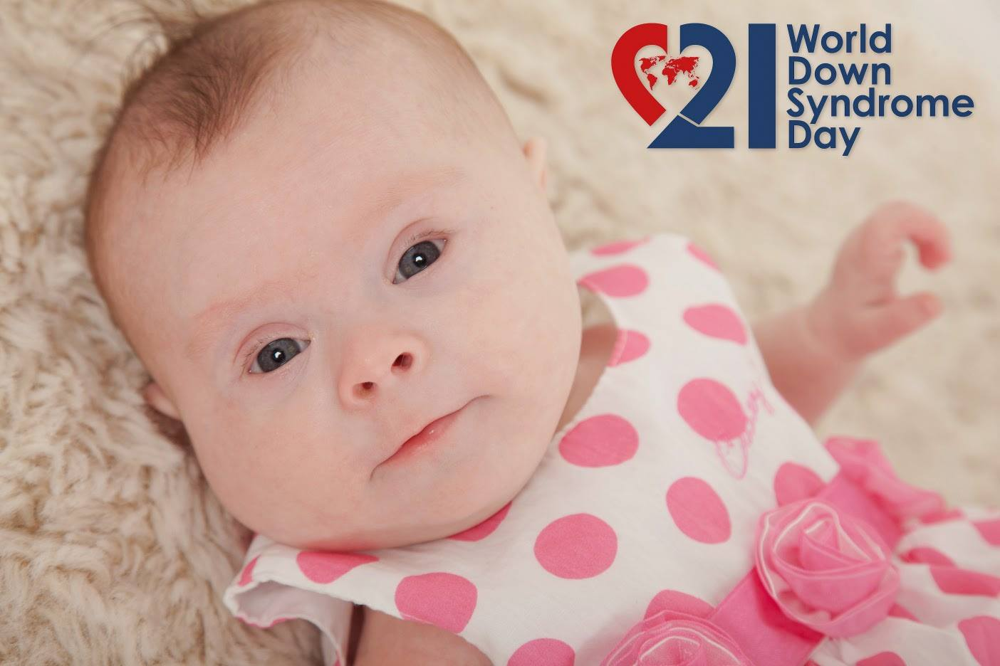

Автор: Тетяна Яремко
21 березня відзначається Міжнародний день людей із синдромом Дауна.
В Україні з синдромом Дауна щороку народжуються близько 400 дітей.
В цей день Львівська група підтримки ГВ долучається до інформаційної підтримки події з інформацією про грудне вигодовування дітей із синдромом Дауна.
Грудне вигодовування має неймовірний вплив, як на дитину з СД, так і на матір. Діти, яких не годують грудьми, частіше хворіють на респіраторні захворювання, вушні інфекції, розлади травлення та інші розповсюджені хвороби. Особливо це небезпечно для дітей з синдромом Дауна через їх схильність до цих захворювань.
Грудне годування гарантує регулярний частий тісний контакт між дитиною і мамою. Тактильна стимуляція сприяє повноцінному розвитку всіх здібностей такої дитини. Ссання грудей має дивовижний вплив на тонус м’яз обличчя, координацію губ і язика.
Навіть якщо ваша дитина потребує особливої медичної допомоги і їй необхідно перебувати в лікарні, ваше молоко безцінне для неї. Якщо ви не маєте можливості в певний період прикладати до грудей дитину, лактацію можна підтримати регулярними зціджуваннями, а молоко передавати дитині у відділення для годування через зонд або інші альтернативні методи (крім використання пляшки з соскою) до того часу, поки ви знов не зможете відновити годування з грудей.
1. Слабкий тонус м’язів
Діти із синдромом Дауна, можуть мати складнощі з годуванням в перші дні. Оскільки такі діти мають слабкий тонус м’язів, важливо добре підтримувати голівку під час годування. Сильний прилив молока, через слабкий тонус м’язів може призводити до того, що дитина може захлинатися або "цокати".... Буває так, що в дитини немає особливих проблем зі здоров’ям, але через слабке смоктання, є потреба у зціджуванні молока і догодовуванням ним, для підтримки лактації на потрібному рівні.
2. Виштовхування грудей язиком
Такі діти часто мають висунутий язик, який може виштовхувати груди, що ускладнює прикладання до грудей, та травмує соски. Для цього застосовуються певні вправи.....
3. Сонливість
Для дітей з СД характерно декілька перших тижнів бути сонливими. Іноді малюка важко розбудити на годування, але потрібно....
4. Повільне зростання ваги і догодовування
Інколи трапляється так, що дитина з СД набирає повільно на вазі, навіть якщо отримує достатньо годування.
5. Серцеві вади
Деякі діти з СД мають серцеві вади, які потребують додаткової енергії. Часто таких дітей годують із пляшки а це погіршує становище оскільки в дітей падає рівень кисню в крові, і температура тіла нижча при смоктанні молока із пляшки. А діти, яких годують сумішшю, повільніше набирають вагу і довше залишаються в лікарні.
6. Пляшки-соски
Уникайте використання пляшки і соски якомога довше найкраще не використовувати їх взагалі. Використання штучних сосок часто призводить до "плутанини сосків" дитиною, оскільки механізм смоктання цих предметів і грудей суттєво відрізняється. Годування одночасно грудьми і пляшкою дуже часто ускладнює грудне вигодовування. Якщо дитину треба догодовувати, використовуйте чашку, ложку, піпетку, шприц, систему для догодовування біля грудей (готову чи саморобну) чи використовуйте "пальцеве" годування.

Через фізичні особливості дитина із синдромом Дауна постійно буде отримувати допомогу від лікарів, таких як педіатр і кардіолог. Пам’ятайте, що вони спеціалісти в своїй галузі і не обов’язково орієнтуються в питаннях грудного вигодовування. Можливо, вам стане в нагоді місцева група підтримки грудного вигодовування або місцеві групи батьків дітей з синдромом Дауна.
(більше інформаційної підтримки щодо дітей із синдромом Дауна ви зможете отримати у ВБО «Даун Синдром» )